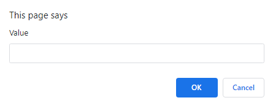

The editor is where you can create projects with CodeSup. At the top, there is a place where you can enter the project's name. That name will be seen while running the project or downloading the file. Then you have options to save it as a .txt file, load the file, and run the project. Below that you have the script area, where you can enter your project's script.
The first key to programming in CodeSup is understanding the structure of a line. Each line has this structure:
function=parameters;
Function tells the program exactly what to do, it can be print, if, etc. The parameters specify what to do with the function, for example print=Hello. If there is more than one parameter, they are separated by a colon:
function=parameter1:parameter2;
All lines must end in a semicolon. Even the last one.
Here is a list of the functions in CodeSup:
Print lets you display any text. For example:
print=Hello World!;
Output:
Hello World!
Storage lets you work with a variable. There are many storage functions. We'll talk about each one individually.
storage.save will set the value of the variable:
storage.save=Hi
The program will save "Hi".
You can then load that value with storage.get. This function does not require any parameters.
storage.get=;
Output:
Hi
storage.input will ask the user what value the variable should be set to. You can customize the prompt message as well. Here is an example:
storage.input=Value;
Output:
And the program will save your input.
If lets you check if two values are the same. It requires four parameters.
Structure:
if=value1:value2:result-if-true:result-if-false;
It will check if value1 and value2 are the same. If they are, it will display result-if-true, if they are not, it will display result-if-false
Example 1:
if=4:4:yes:no;
Output:
yes
Example 2:
if=4:3:yes:no;
Output:
no
You can use storage in the if function as well. Just replace the first parameter with "storage", and the program will check if the stored value and the second parameter are the same. Here's an example:
storage.save=3; if=storage:3:yes:no;
Output:
yes